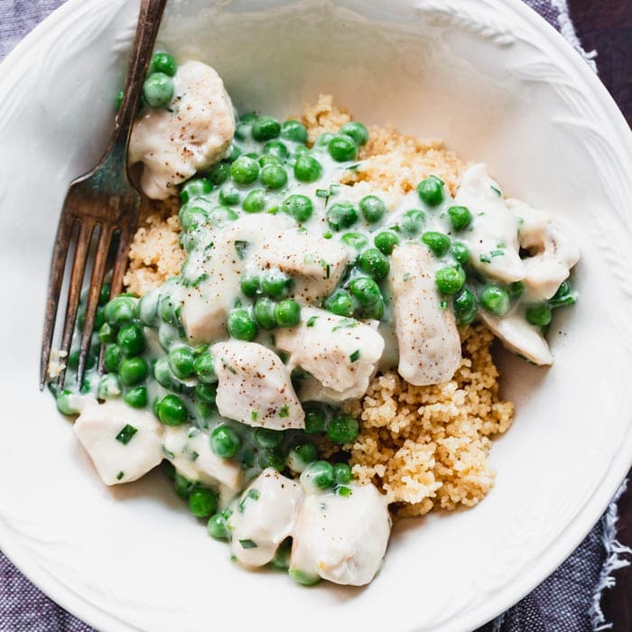

Pea Chicken

Pea chicken is a classic comfort dish that is easy to make and delicious.
It is made with chicken that is cooked in a creamy sauce with peas.
Pea chicken can be served with a variety of sides, such as rice, noodles, or mashed potatoes.
Ingredients:
- 1 pound boneless, skinless chicken breasts, cut into bite-sized pieces
- 1 tablespoon olive oil
- 1/2 onion, chopped
- 2 cloves garlic, minced
- 1/2 cup all-purpose flour
- 2 cups chicken broth
- 1/2 cup heavy cream
- 1 cup frozen peas
- 1/4 teaspoon salt
- 1/4 teaspoon black pepper
Instructions:
- Heat the olive oil in a large skillet over medium heat.
- Add the chicken to the skillet and cook until browned on all sides.
- Add the onion and garlic to the skillet and cook until softened.
- Sprinkle the flour over the chicken and vegetables and stir to coat.
- Gradually whisk in the chicken broth until the sauce is smooth.
- Bring the sauce to a boil, then reduce heat to low and simmer for 10 minutes, or until the chicken is cooked through.
- Stir in the heavy cream, peas, salt, and pepper.
- Cook until the peas are heated through.
- Serve immediately over rice, noodles, or mashed potatoes.
Tips:
- For a richer flavor, use homemade chicken broth.
- To make the dish ahead of time, cook the chicken and vegetables as directed. Let cool completely, then transfer to a freezer-safe container. Freeze for up to 3 months. When ready to serve, thaw the chicken and vegetables in the refrigerator overnight. Then, heat the chicken and vegetables in a saucepan over medium heat until warmed through. Stir in the heavy cream, peas, salt, and pepper. Cook until the peas are heated through and serve immediately.
- Pea chicken can also be made with other vegetables, such as carrots, celery, or mushrooms. Simply add the vegetables to the skillet with the chicken and onion.
Return to main page